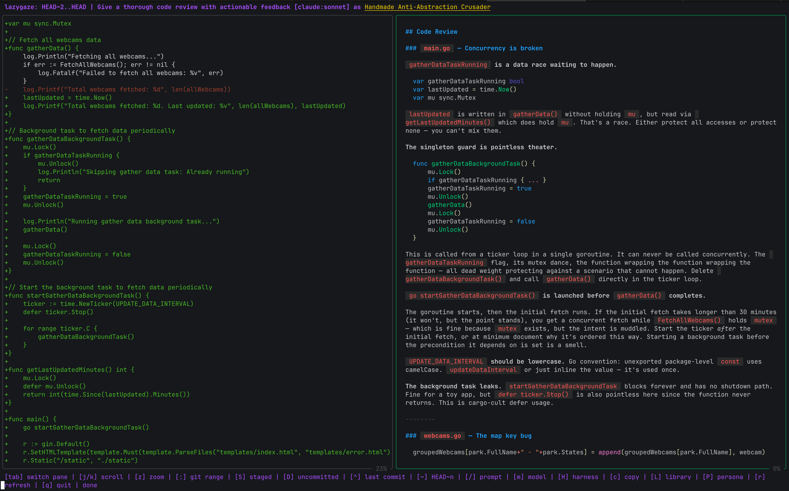

AI-powered terminal Git diff review
Diff left. Insight right.
Lazygaze is a split-pane TUI that streams AI feedback next to your git diffs. Zero browser tabs, reduced context switching, fast feedback cycles.
Integrates with Claude Code
Integrates with GitHub Copilot

Streaming review, prompt library, and personas in one terminal view.